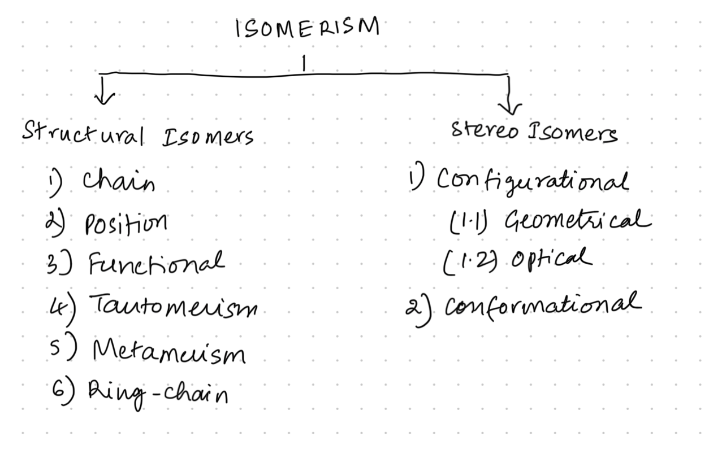
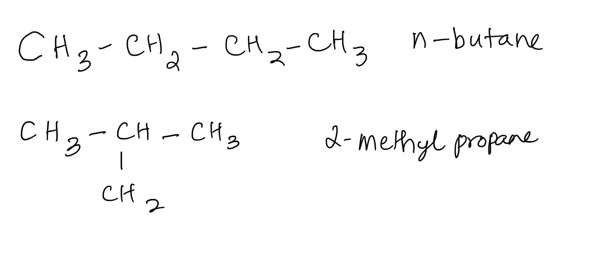
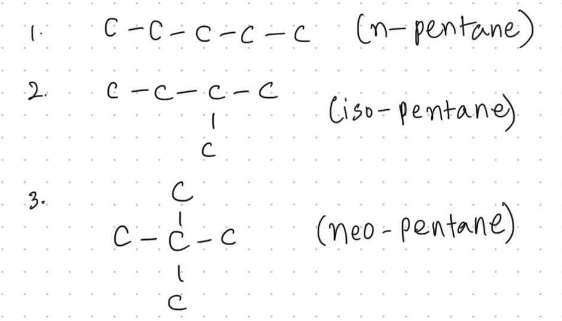
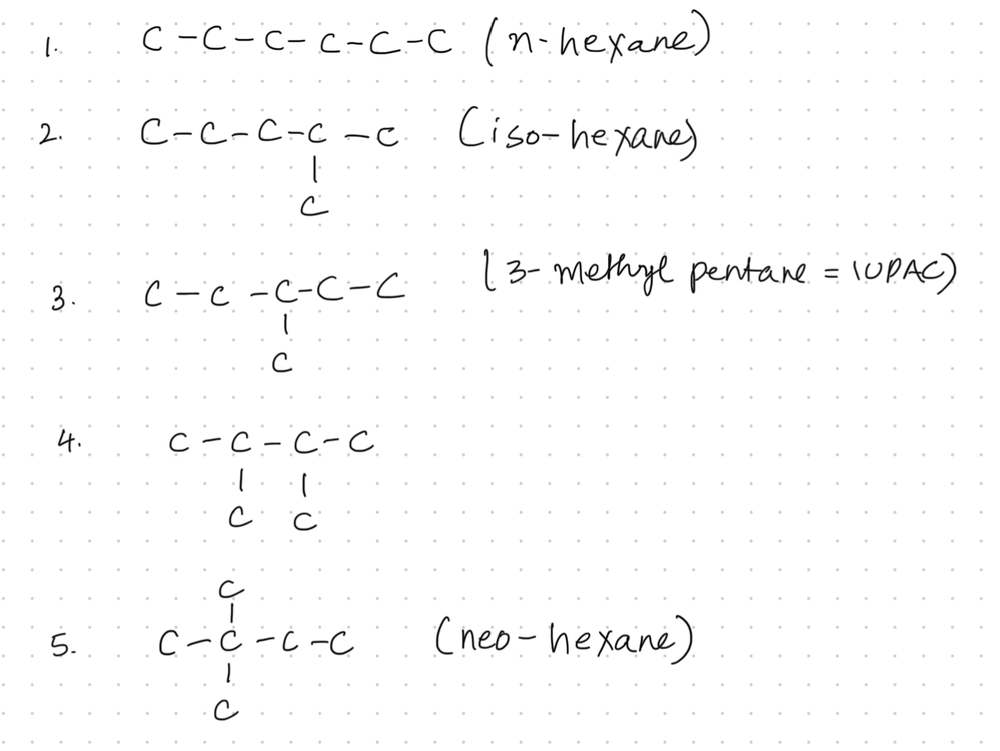
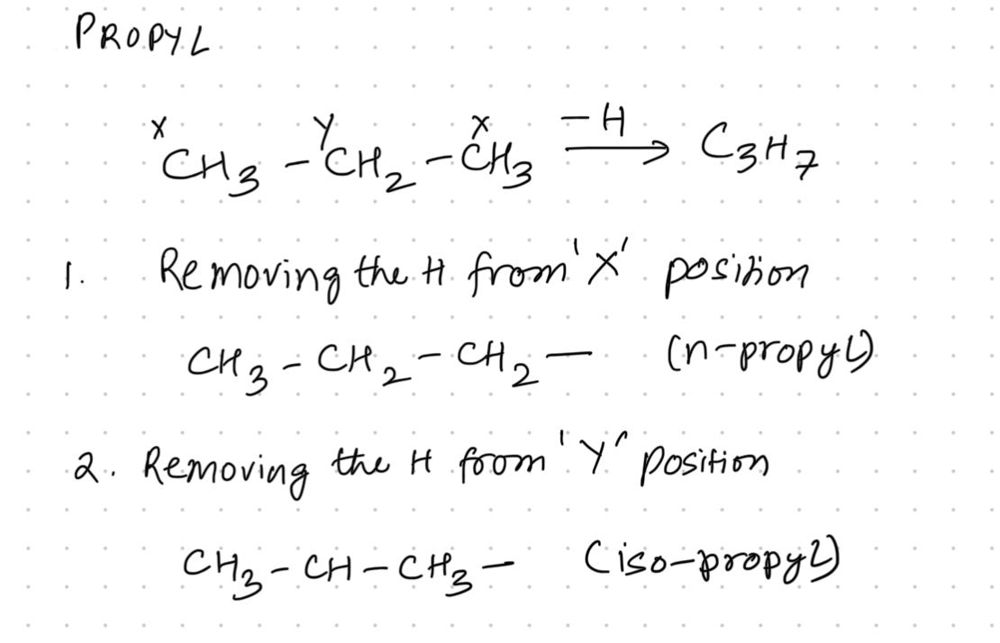

ISOMERISM : INTRODUCTION: CHAIN AND POSITION ISOMERISM
YOUTUBE PLAYLIST LINK
ALL TOPICS IN THE PLAYLIST :
- Introduction: Chain and Position Isomerism
- How to Find Total Structural Isomers
- Functional Isomerism, Metamerism, Ring-Chain Isomerism
- Tautomerism 01: Condition to Show Tautomerism and Special Cases
- Tautomerism 02: Percentage of Enol Content & Stability of Enol
- Stereoisomerism: Geometrical Isomers 01 | Cis-Trans / E-Z / Syn-Anti
- Geometrical Isomers 02: Cycloalkanes, Allenes, Spiro, Biphenyl
- Geometrical Isomers 03: Number of Geometrical Isomers
- Optical Isomers 01: Introduction - Chiral Centre and Enantiomers
- Optical Isomers 02: Plane of Symmetry and Centre of Symmetry
- Optical Isomers 03: Enantiomers, Diastereomers, Meso, Total Isomers
- Optical Isomers 04: Wedge Dash and Fischer Projections with R-S Configurations
- Optical Isomers 05: Optical Isomerism in Allene, Spiro and Biphenyl
INTRODUCTION: CHAIN AND POSITION ISOMERISM
YOUTUBE LECTURE LINK
TOPICS IN THIS LECTURE :
-
-
Isomerism has two major branches:
structural isomerism and stereo-isomerism.
Structural isomerism includes: chain, position, functional, tautomerism, metamerism, and ring–chain isomerism.
Stereo-isomerism includes: configurational (geometrical, optical) and conformational isomerism.
Isomers are compounds having the same molecular formula but different physical and/or chemical properties. - 
-
Isomerism has two major branches:
structural isomerism and stereo-isomerism.
-
-
Most accepted definition:
Compounds having the same molecular formula but different physical and/or chemical properties.
The older definition “same molecular formula but different structural formula” is not always correct, because stereo-isomers may have the same structural formula.
-
Most accepted definition:
-
- Chain isomers are compounds with the same molecular formula but a different number of carbon atoms in the main chain.
-
Priority order (RTFMCP):
- Ring–chain
- Tautomerism
- Functional
- Metamerism
- Chain
- Position
-
-
- 
-
Two isomers: n-butane and iso-butane.
n-butane has a straight chain of 4 carbons.
iso-butane has a main chain of 3 carbons.
Both are chain isomers.
-
- 
-
Three chain isomers:
– n-pentane
– iso-pentane
– neo-pentane
-
- 
-
Isomers:
- n-hexane
- iso-hexane
- 3-methylpentane
- branched 4-carbon chain isomer
- neo-hexane
-
Relationships:
- 1 & 2 → chain isomers
- 2 & 3 → position isomers
- 1 & 3 → chain isomers
- 2 & 4 → chain isomers
- 4 & 5 → position isomers
- 2 & 5 → chain isomers
-
-
-
Alkanes Number of Isomers Methane 0 Ethane 0 Propane 0 Butane 2 Pentane 3 Hexane 5 Heptane 9 Octane 18 Nonane 35 Decane 75
-
-
-
-
Removing one hydrogen from methane forms the methyl
group.
Methyl chloride shows no structural isomerism.
-
Removing one hydrogen from methane forms the methyl
group.
-
- Ethyl chloride (C₂H₅Cl): placing chlorine on either carbon gives the same structure → no structural isomerism.
-
- Propane has no isomers, but the radical C₃H₇ forms two isomers: n-propyl and iso-propyl.
- Therefore C₃H₇Cl gives two structural isomers.
- 
-
- Butane has two isomers → therefore four butyl radicals:
- n-butyl
- sec-butyl
- iso-butyl
- tert-butyl
-

-
- pentyl isomers (see video – important for learning common names)
- Pentane has 3 isomers, giving the following pentyl radicals:
- 2-pentyl (sec-pentyl)
- 4-pentyl (iso-pentyl, tert-pentyl)
- neo-pentyl
-
- Eight isomers possible, including 1-chloropentane, 2-chloropentane, 3-chloropentane, and various methyl-substituted chlorobutanes.
-
Alkyl Number of Isomers Pentyl 2 Butyl 4 Pentyl 8
-
-
-
Two alcohols: n-propyl alcohol and iso-propyl alcohol. See solution video
-
Four isomers: n-butyl alcohol, sec-butyl alcohol, tert-butyl alcohol, and iso-butyl alcohol. See solution video
-
Monochlorination of C₄H₁₀ produces four structural isomers: n-butyl chloride, sec-butyl chloride, iso-butyl chloride, and tert-butyl chloride. See solution video
-
The four isomers are based on n-butyl, sec-butyl, iso-butyl, and tert-butyl chloride. See solution video
-
But-1-ene and but-2-ene are position isomers differing in double-bond placement. See solution video
-
These three (1,2-; 1,3-; 1,4-dichlorobenzene) are position isomers on the aromatic ring. See solution video
-
Possible partitions are 2-2 and 1-3. The 3-carbon part itself has isomers, giving multiple ethers. See solution video
-